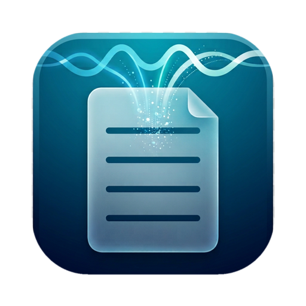
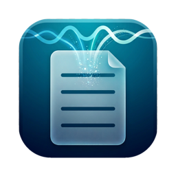

01
完全ローカル、クラウド送信ゼロ
クラウドへの送信は一切なし。音声・文字起こし・メモ・要約はすべて Mac の中に留まります。弁護士・税理士などのクライアント相談、役員会、医療機関の打ち合わせなど、外に出せない会議にも安心して使えます。
- 外部サーバーへのアップロードなし
- アカウント登録・ログイン不要

クラウド送信ゼロ。仮想オーディオドライバ不要で、オンライン会議の相手の声までクリアに録音。Whisper による文字起こしと MLX による要約が、すべてあなたの Mac の上で動きます。
macOS 15 以降 · Apple Silicon (M1 以降) · 無料版はクレジットカード不要

デモ動画は近日公開予定です
Why MinuteAI
音声も、文字起こしも、要約も。あなたの Mac の外に出ることはありません。
01
クラウドへの送信は一切なし。音声・文字起こし・メモ・要約はすべて Mac の中に留まります。弁護士・税理士などのクライアント相談、役員会、医療機関の打ち合わせなど、外に出せない会議にも安心して使えます。
02
BlackHole などの面倒な仮想ドライバ設定は不要。macOS のプロセスタップでシステム音声を直接取り込み、自前の SpeexDSP エコーキャンセルでスピーカー再生時の二重録音も除去。相手の声も自分の声もクリアに残ります。
03
聞き間違えられた用語を一度直せば、それまでの文字起こしにも、これからの文字起こしにも即座に反映。要約は Apple Silicon に最適化された MLX のローカル LLM が高速に生成します。
単語の修正
00:41
03:12
12:05
Pricing
まずは無料版で、すべてのコア機能をお試しください。Pro はいつでも解約できます。
毎日の会議に、制限なく
月あたり $3.25 · 毎年自動更新 · いつでも解約できます
ご購入前にご確認ください
価格は米ドルです。決済は Lemon Squeezy で安全に行われ、地域によって税が加算される場合があります。解約後も録音済みの会議はすべて残ります。
FAQ